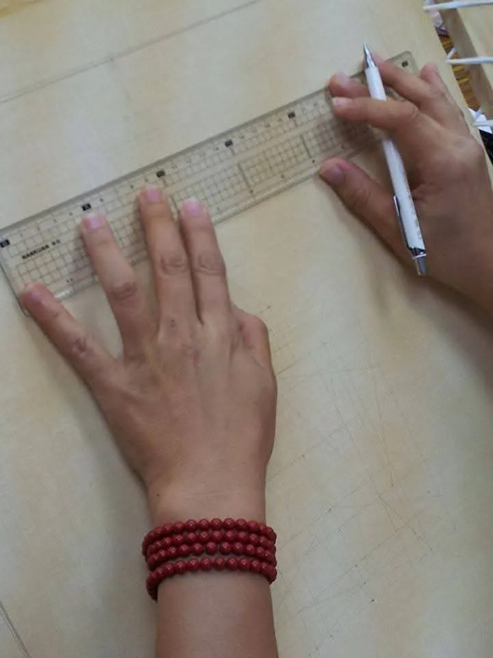
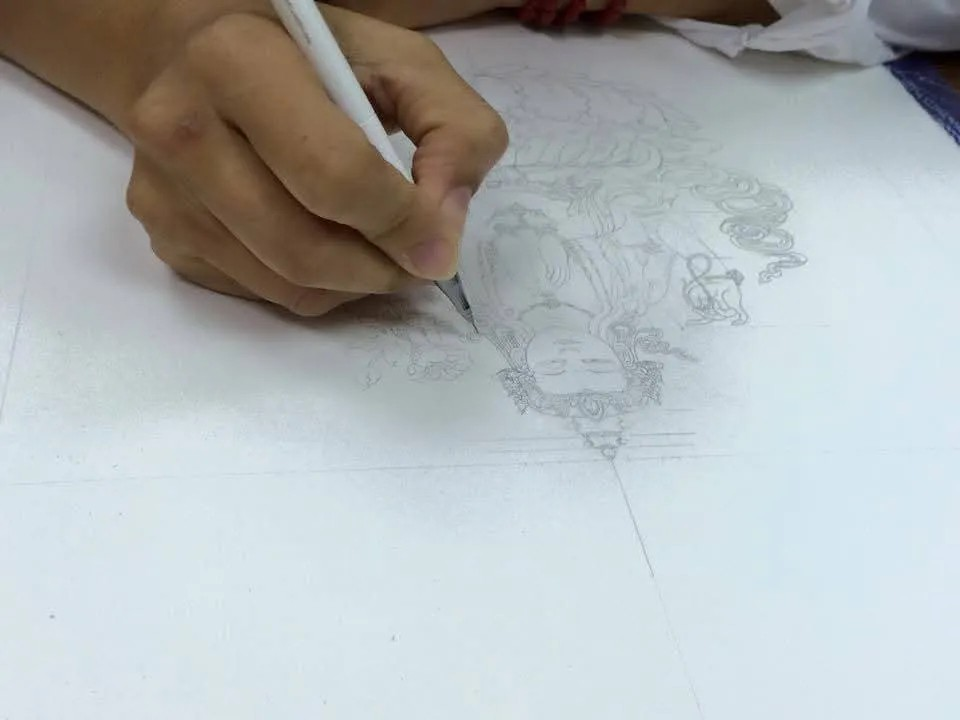
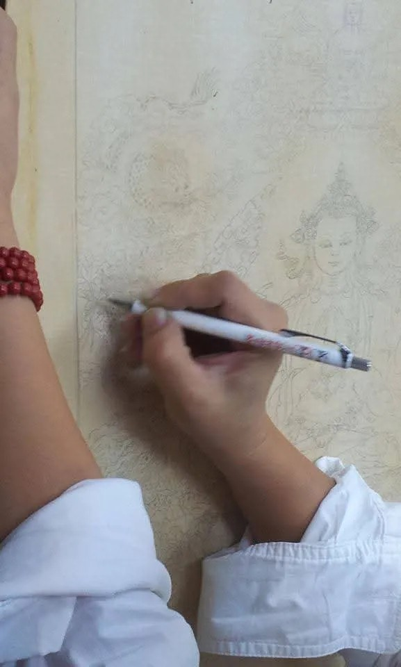
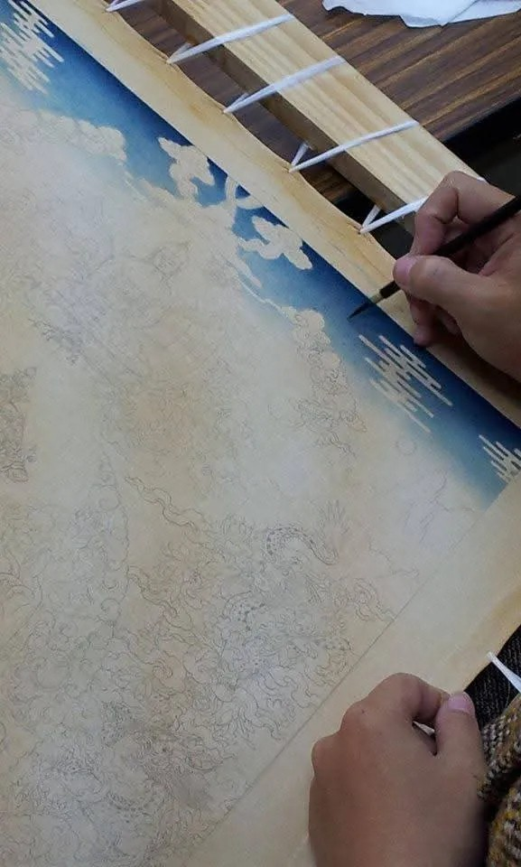
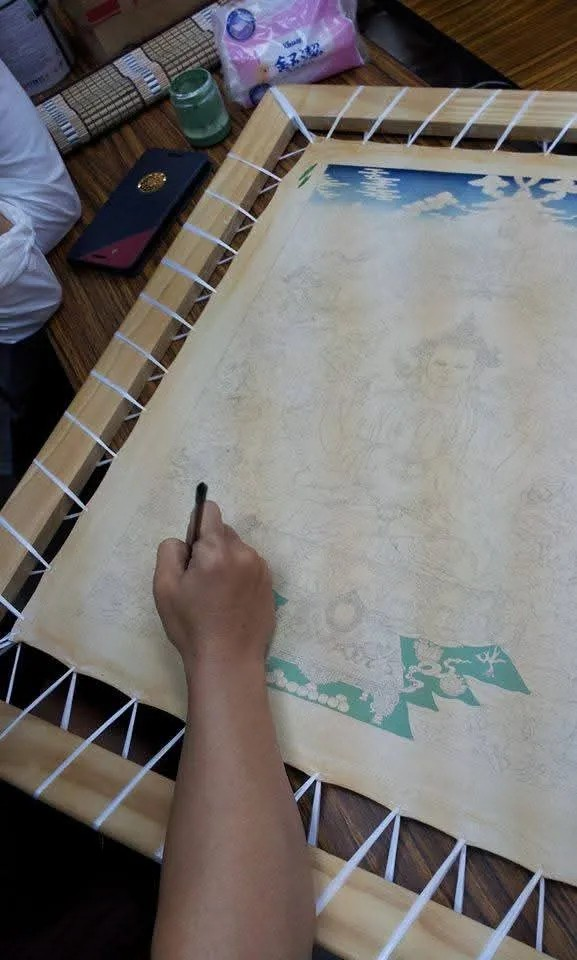
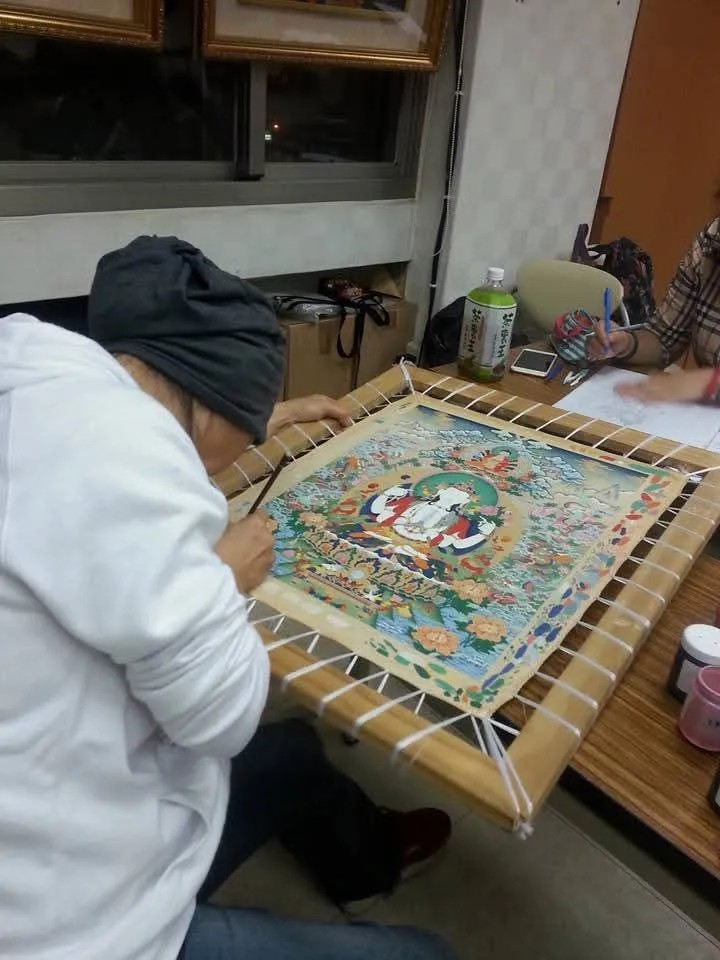

【筆尖上的修行】曾雅蘭的唐卡創作心歷與工藝美學
在當代快速奔流的節奏中，曾雅蘭選擇了一條需要極大耐心與定力的古典修持之路。唐卡的誕生，是一連串近乎苦修般繁複工序的累積，從基礎的畫布製作到最後的開眼開光，無不體現畫師對藝術純粹性的極致追求。
一、 手作畫布與嚴謹度量：「替」的幾何法度
一幅具備生命力的唐卡，始於最質樸的手作溫度。畫師必須親自將棉布車邊，並以棉線穿引、均勻張緊於特製木框之上。隨後歷經上膠、陰乾、拋光打磨的「不斷重複」，直至布面的每根纖維孔洞皆被細密填平，形成如溫潤羊皮紙般平滑的繪畫肌理。
在構圖下筆時，畫師不使用公分或現代尺規，而是恪遵傳承千年的度量基準——以名為「替」的幾何比例為依歸。從頂髻、面容、雙耳至身軀肩肘，皆有著兩倍、四倍、六倍的精準比例對應，確保佛相的圓融莊嚴。



二、 傳統典範中的原創巧思：法境的當代昇華
曾雅蘭認為，唐卡中的本尊坐姿與法印雖受經典嚴格規範，但在周圍的雲水山川、自然花草與眷屬佈局上，正是畫師體悟佛理、發揮藝術創造力的廣闊天地。
在歷時數月的創作中，她往往對構圖進行多次深化昇華——例如在經典四臂觀音的創稿中，她將傳統構圖調整為「六龍御天」的磅礡佈局，與水中綻放的六朵清淨蓮花遙相呼應，巧妙將大乘佛教「六度波羅蜜」（布施、持戒、忍辱、精進、禪定、智慧）的行願融會於畫境中；同時嚴謹考證「五妙欲」（色、聲、香、味、觸）的供養象徵，使整幅畫作宛如一部視覺化的經典。
三、 天然礦物研磨與繁複繪製：用時間凝練光華
在正式落筆前，畫師需耐心地在乳缽中親手研磨各種礦物、水干、純金，每一個顏色往往需耗時三至四個小時的靜心研磨，方能淬鍊出細膩如雲霧般的純淨發色。



四、 兩週點染與「色空不二」的深刻體悟
傳統唐卡的漸層立體感，全靠畫師手持細筆，沾取極淡的礦彩「一點、一點」慢慢堆疊而來。現代繪圖軟體只需數秒即可拉出平滑漸層，但在曾雅蘭的案頭前，光是一整片湛藍深邃的天空，她就老老實實點了整整兩個星期。
畫師的靜心札記：
「畫唐卡時必須隨時攝心，氣息要調整到如游絲般細微而穩定，在每一個微小的色點中，都能清清楚楚看見自己當下的心念波瀾。
記得有一整天專注於點染，歇筆休息時，我驚訝地發現身體裡依然持續共振著那份細密的點染波頻，彷彿全身細胞都在輕鳴。那份久久不散的平靜與法喜，讓我領悟到唐卡點染本身就是一種如持咒般的密行，更在筆尖與長久的寂靜中，親身證會了『色空不二』的佛法意境。」
每一幅凝聚無盡虔敬、融合天然礦物斑斕色彩與藝術巧思的作品，往往經歷跨越數季的打磨，並在殊勝吉祥的吉日終告圓滿。